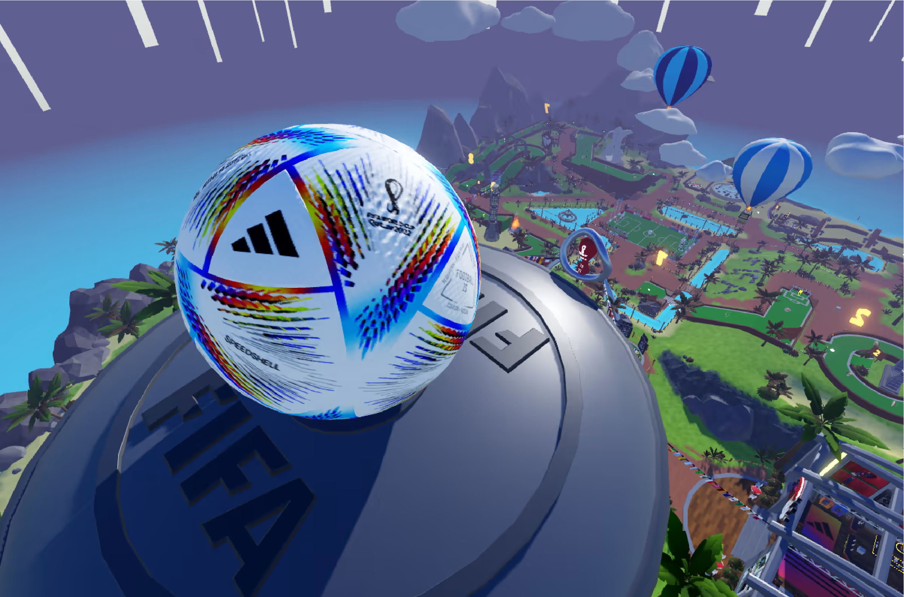
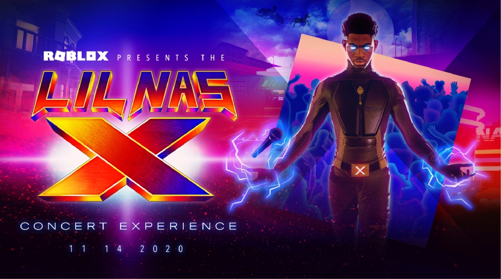

Roblox Events
Roblox occasionally hosts real-life and virtual events. They have in the past hosted events such as BloxCon, which was a convention for ordinary players on the platform. Roblox operates annual Easter egg hunts and also hosts an annual event called the “Bloxy Awards”, an awards ceremony that also functions as a fundraiser. The 2020 edition of the Bloxy Awards, held virtually on the platform, drew 600,000 viewers. Roblox Corporation annually hosts the Roblox Developers Conference, a three-day invite-only event in San Francisco where top content creators on the site learn of upcoming changes to the platform. The company has also hosted similar events in London and Amsterdam.
Roblox occasionally engages in events to promote films, such as ones held to promote Wonder Woman 1984 and Aquaman. In 2020, Roblox hosted its first virtual concert, which was compared by Rolling Stone to that of American rapper Travis Scott's virtual concert in Fortnite, during which American rapper Lil Nas X debuted his song "Holiday" to an audience of Roblox players. In 2021, Swedish singer Zara Larsson performed songs at a virtual party to celebrate her the reissuing of her album Poster Girl. On September 17, 2021, a virtual concert by the American band Twenty One Pilots took place. In October 2021, Roblox partnered with Chipotle Mexican Grill to give $1 million of burritos away to the first 30,000 people every day as a part of Chipotle's Halloween Boorito promotion.